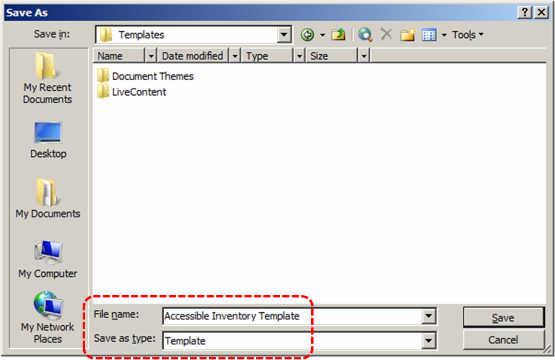
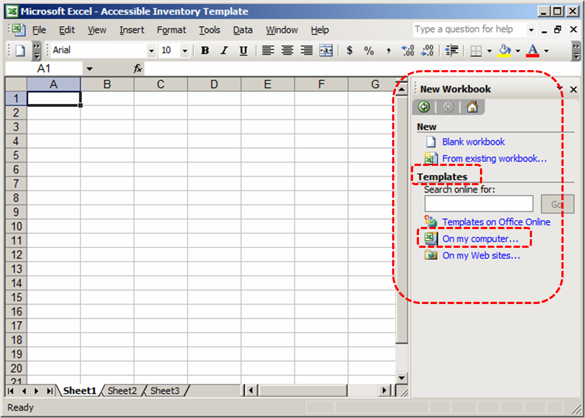
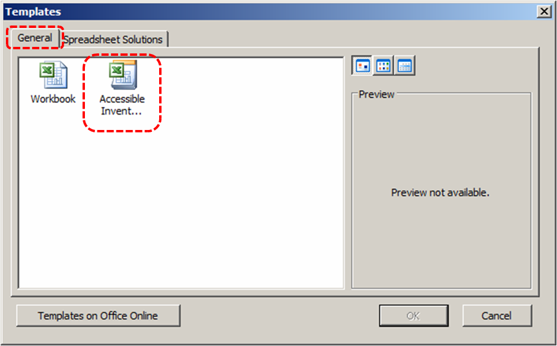
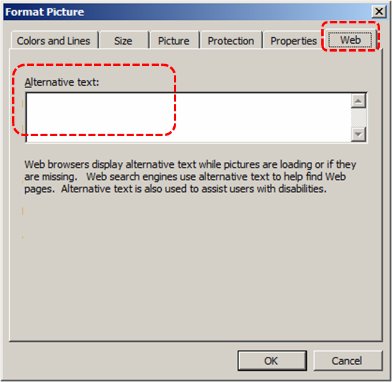

Authoring Techniques for Accessible Office Documents: Excel 2003
Version
Date of Current Version: 08 February 2011
Latest Version (HTML): http://inclusivedesign.ca/accessible-office-documents/excel2003
Quick Reference
Usage Notes
Technique 1. Use Accessible Templates
Technique 2. Set Document Language
Technique 3. Provide Text Alternatives for Images and Graphical Objects
Technique 4. Format Your Cells
Technique 5. Use Cell Addressing
Technique 6. Create Accessible Charts
Technique 7. Provide Structure for Tables
Technique 8. Use Other Content Structuring Features
Technique 9. Make Content Easier to See
Technique 10. Make Content Easier to Understand
Technique 11. Check Accessibility
Technique 12. Use Accessibility Features when Saving/Exporting to Other Formats
Technique 13. Consider Using Accessibility Support Applications/Plugins
Accessibility Help
References and Resources
Acknowledgments
Usage Notes
Overview
At the time of testing (January 17, 2011), Excel 2003 provides a set of accessibility features that is sufficient to enable the production of accessible digital office documents. However, Excel 2003 does not include an accessibility checking feature.
What’s an “Office Document”?
You should use these techniques when you are using Excel 2003 to create documents that are:
- Intended to be used by people (i.e., not computer code),
- Text-based (i.e., not simply images, although they may contain images),
- Fully printable (i.e., where dynamic features are limited to automatic page numbering, table of contents, etc. and do not include audio, video, or embedded interactivity),
- Self-contained (i.e., without hyperlinks to other documents, unlike web content), and
- Typical of office-style workflows (Reports, letters, memos, budgets, presentations, etc.).
If you are creating forms, web pages, applications, or other dynamic and/or interactive content, these techniques will still be useful to you, but you should also consult the W3C-WAI Web Content Accessibility Guidelines (WCAG 2.0) because these are specifically designed to provide guidance for highly dynamic and/or interactive content.
File Formats
The default file format for Excel 2003 is Microsoft Office Binary File Format (XLS).
In addition, Excel 2003 offers many other spreadsheet processor and web format saving options. Most of these have not been checked for accessibility, but some information and/or instructions are available for the following formats in Technique 12 (below):
- HTML
Document Conventions
We have tried to formulate these techniques so that they are useful to all authors, regardless of whether they use a mouse. However, for clarity there are several instances where mouse-only language is used. Below are the mouse-only terms and their keyboard alternatives:
*Right-click: To right-click with the keyboard, select the object using the Shift+Arrow keys and then press either (1) the “Right-Click” key (some keyboard have this to the right of the spacebar) or Shift+F10.
Disclaimer and Testing Details:
Following these techniques will increase the accessibility of your documents, but it does not guarantee accessibility to any specific disability groups. In cases where more certainty is required, it is recommended that you test the office documents with end users with disabilities, including screen reader users.
The application-specific steps and screenshots in this document were created using Microsoft Excel 2003 (ver. 11.5612.5606, Windows 7, Jan. 2011) while creating a XLS document. Files are also easily saved as other file formats (see Technique 12, below).
This document is provided for information purposes only and is neither a recommendation nor a guarantee of results. If errors are found, please report them to: adod-comments@idrc.ocad.ca.
Technique 1. Use Accessible Templates
All office documents start with a template, which can be as simple as a blank standard-sized page or as complex as a nearly complete document with text, graphics and other content. For example, a “Meeting Minutes” template might include headings for information relevant to a business meeting, such as “Actions” above a table with rows to denote time and columns for actions of the meeting.
Because templates provide the starting-point for so many documents, accessibility is critical. If you are unsure whether a template is accessible, you should check a sample document produced when the template is used (see Technique 11, below).
Excel 2003’s default template for new documents is a blank page. The basic installation also includes other blank office-related documents. These are all accessible by virtue of being blank.
It is possible to create your own accessible templates from scratch in Excel 2003. As well, you can edit and modify the existing prepackaged templates, ensuring their accessibility as you do so and saving them as a new template.
To create an accessible template
- Create a new document
- Ensure that you follow the techniques in this document
- When you are finished you should also check the accessibility of the document (See Technique 11, below)
- Go to menu item: File > Save As
- In the Save as type list, select Excel Template
- In the File name box, type a name for the template. Using a descriptive File name (e.g., “Accessible Inventory Template”) will increase the prominence of the accessibility status.
- Select Save

To select an accessible template
Note: Only use these steps if you have an accessible template available (e.g. that you previously saved). Otherwise, simply open a new (blank) document.
- Go to menu item: File > New
- In the New Workbook section, under Templates, select On my computer…

- In the Templates dialog, select the General tab
- Select your accessible template from the gallery
 - Select OK
- A new document based on the template will be displayed. If you have chosen an accessible template, the document will be accessible at this point. As you add your content (e.g., text, images, etc.), ensure that you consult the sections that follow to preserve accessibility.
Technique 2. Set Document Language
In order for assistive technologies (e.g., screen readers) to be able to present your document accurately, it is important to indicate the natural language of the document. If a different natural language is used for a paragraph or selected text, this also needs to be clearly indicated.
At this time, it is not possible to indicate the natural language of selected cells within an Excel 2003 workbook. [Tested: Jan 17, 2011]
To change the default language for a workbook
- Go to menu item: Tools > Language
- In the Mark select text as box, select the language from the list
- Select Default…
- Select OK
Technique 3. Provide Text Alternatives for Images and Graphical Objects
When using images or other graphical objects, such as charts and graphs, it is important to ensure that the information you intend to convey by the image is also conveyed to people who cannot see the image. This can be accomplished by adding concise alternative text to of each image. If an image is too complicated to concisely describe in the alternative text alone (artwork, flowcharts, etc.), provide a short text alternative and a longer description as well.
Tips for writing alternative text
- Try to answer the question "what information is the image conveying?"
- If the image does not convey any useful information, leave the alternative text blank
- If the image contains meaningful text, ensure all of the text is replicated
- Alternative text should be fairly short, usually a sentence or less and rarely more than two sentences
- If more description is required (e.g., for a chart or graph), provide a short description in the alternative text (e.g., a summary of the trend) and more detail in the long description, see below
- Test by having others review the document with the images replaced by the alternative text
Tips for writing longer descriptions
- Long descriptions should be used when text alternatives (see above) are insufficient to answer the question "what information is the image conveying?"
- In some situations, the information being conveyed will be how an image looks (e.g., an artwork, architectural detail, etc.). In these cases, try to describe the image without making too many of your own assumptions.
- One approach is to imagine you are describing the image to a person over the phone
- Ensure that you still provide concise alternative text to help readers decide if they are interested in the longer description
Alternatively, you can include the same information conveyed by the image within the body of the document, providing the images as an alternate to the text. In that case, you do not have to provide alternate text within the image.
To add alternative text to images and graphical objects
- Right-click* the object
- Select Format Picture…
- Select the Web tab
- Fill in the Alternative text box
- Select OK

Technique 4. Format Your Cells
As you begin adding content, your spreadsheet will require structuring to bring meaning to the data, make it easier to navigate, and help assistive technologies read it accurately. One of the easiest ways to do this is to ensure that you properly format the cells.
4.1 Named Styles
You should make use of the named styles that are included with the office application (e.g., “Heading”, “Result”, etc.) before creating your own styles or using the character formatting tools directly. Named styles help your readers understand why something was formatted in a given way, which is especially helpful when there are multiple reasons for the same formatting (e.g., it is common to use italics for emphasis, Latin terms and species names).
For more information on formatting using named styles, see Technique 9.
Note: While office application suites support headings in much the same way, the named styles often differ.
Formatting header and result cells brings order to the spreadsheet and makes it easier for users to navigate effectively. For example, you can format header rows and columns using “Heading” styles to apply bolded, enlarged, and italicized text (among other characteristics). You may also want to format cells containing results of calculations to appear bold and underlined to help distinguish them from the rest of your data.
At this time, Word 2003 does not offer a Named Styles feature. [Tested: January 17, 2011]
4.2 Other Cell Characteristics
Ensure your cells are formatted to properly represent your data, including number and text attributes.
To format cell characteristics
- Highlight the cells that you want to format
- Go to menu item: Format > Cells…
- In the relevant sections (e.g. Numbers, Font, etc.) make your adjustments
Note: When formatting your spreadsheet, it is best to avoid merging cells. At times, it may seem easier to present your data by merging cells, but this can make it more difficult for users of assistive technologies and people navigating your spreadsheet using the keyboard.
Technique 5. Use Cell Addressing
5.1 Define Names
Naming the different data ranges within your spreadsheet makes it easier to navigate through the document and find specific information. By associating a meaningful name to a data range, you will be enhancing the readability of your document. These named ranges can be referenced in multiple locations of your document and within calculations and equations.
To define a name
- Highlight the cells you would like to name
- Go to menu item: Insert > Name > Define…
- In the Define Name dialog, enter the name for the data range in the Name text box
- Select OK
Technique 6. Create Accessible Charts
Charts can be used to make data more understandable for some audiences. However, it is important to ensure that your chart is as accessible as possible to all members of your audience. All basic accessibility considerations that are applied to the rest of your document must also be applied to your charts and the elements within your charts. For example, use shape and color, rather than color alone, to convey information. As well, some further steps should be taken to ensure that the contents are your chart are appropriate labeled to give users reference points that will help them to correctly interpret the information.
Tips for making charts more accessible
- Follow the techniques for making content easier to see (Technique 9) and understand (Technique 10). For example, use shape and color, rather than color alone, to convey information.
- When creating line charts, use the formatting options to create different types of dotted lines to facilitate legibility for users who are color blind
- Change the default colors to a color safe or gray-scale palette
- Use the formatting options to change predefined colors, ensuring that they align with sufficient contrast requirements (see Other Considerations, below)
- To help users interpret your chart, use as many of the titles and label options as are relevant
- Consider placing a textual summary of the chart adjacent to it in the spreadsheet. The summary will be required as alternative text or longer descriptive text if the chart is ever exported to another office application (e.g. word processor or presentation application).
- When you export your chart to another office application, consider also including the data used to create the table in tabular form.
To create a chart
- Select the data that you want to include in the chart
- Go to menu item: Insert > Chart…
- Follow the steps in the Chart Wizard, especially Step 3 of 4 which allows you to add titles and labels to the chart
To add titles and labels
- Select the chart
- In the Chart Tools menu section, go to menu item: Chart Options…
- In the Titles section, select the type of title or label you would like to define (e.g., Chart Title, Axis Titles, Data Labels)
To apply a predefined Chart Layout
- Select the chart
- Go to menu item: Chart > Chart Type…
- In the Chart Type dialog, select the Standard Types tab
- Select a Chart type from the scrolling list
- Select OK
To change to a different predefined Chart Type
- In the Chart Tools menu section, go to menu item: Design
- In the Type section, select the Change Chart Type icon
- In the Change Chart Type dialog, select a chart type from the left pane
- Select a Chart Design from the right pane
- Select OK
Technique 7. Provide Structure for Tables
Excel 2003 includes a “Data Chart” feature, but this meant for analyzing data by applying preformatted formulas within the data chart. As such, it is not a structural feature in the same way that tables are in Word 2010 and PowerPoint 2010.
Technique 8. Use Other Content Structuring Features
While cell formatting is the most common method of structuring documents, other content structuring features should be used where appropriate:
8.1 Document Title
In case the document is ever converted into HTML, it should be given a descriptive and meaningful title.
To change the title of the current document
- Go to menu item: File > Properties
- Select the Title text box and enter the Title
Note: The Title defined in the properties is different than the file name. It is also unrelated to the template name, discussed above.
8.2 Avoid “Floating” Elements
Avoid "floating" elements (other than charts) such as floating images, objects, tables or text boxes.
Similarly, avoid placing drawing objects directly into the document (e.g., as borders, to create a diagram). Instead, create borders with page layout tools and insert complete graphical objects.
Technique 9. Make Content Easier to See
9.1 Format of Text
When formatting text, especially when the text is likely to printed, try to:
- Use font sizes between 12 and 18 points for cell contents.
- Use fonts of normal weight, rather than bold or light weight fonts. If you do choose to use bold fonts for emphasis, use them sparingly.
- Use standard fonts with clear spacing and easily recognized upper and lower case characters. Sans serif fonts (e.g., Arial, Verdana) may sometimes be easier to read than serif fonts (e.g., Times New Roman, Garamond).
- Avoid large amounts of text set all in caps, italic or underlined.
- Use normal or expanded character spacing, rather than condensed spacing.
- Avoid animated or scrolling text.
But can’t users just zoom in?Office applications do typically include accessibility features such as the ability to magnify documents and support for high contrast modes. However, because printing is an important aspect of many workflows and changing font sizes directly will change documents details such the pagination, the layout of tables, etc., it is best practice to always format text for a reasonable degree of accessibility.
9.2 Use Sufficient Contrast
The visual presentation of text and images of text should have a contrast ration of at least 4.5:1. To help you determine the contrast, here are some examples on a white background:
- Very good contrast (Foreground=black, Background=white, Ratio=21:1)
- Acceptable contrast (Foreground=#767676, Background=white, Ratio=4.54:1)
- Unacceptable contrast (Foreground=#AAAAAA, Background=white, Ratio=2.32:1)
Also, always use a single solid color for a text background rather than a pattern.
In order to determine whether the colors in your document have sufficient contrast, you can consult an online contrast checker, such as:
- Juicy Studio: Luminosity Color Contrast Ratio Analyzer
- Joe Dolson Color Contrast Spectrum Tester
- Joe Dolson Color Contrast Comparison
9.3 Avoid Using Color Alone
Color should not be used as the only visual means of conveying information, indicating an action, prompting a response, or distinguishing a visual element. In order to spot where color might be the only visual means of conveying information, you can create a screenshot of the document and then view it with online gray-scale converting tools, such as:
9.4 Avoid Relying on Sensory Characteristics
The instructions provided for understanding and operating content should not rely solely on sensory characteristics such as the color or shape of content elements. Here are two examples:
- Do not track changes by simply changing the color of text you have edited and noting the color. Instead use Excel 2003’s “Track Changes” features to track changes.
- Do not distinguish between images by referring to their appearance (e.g. “the bigger one”). Instead, label each image with a figure number and use that for references.
9.5 Avoid Using Images of Text
Before you use an image to control the presentation of text (e.g., to ensure a certain font or color combination), consider whether you can achieve the same result by styling “real text”. If this is not possible, as with logos containing stylized text, make sure to provide alternative text for the image following the techniques noted above.
Technique 10. Make Content Easier to Understand
10.1 Write Clearly
By taking the time to design your content in a consistent way, it will be easier to access, navigate and interpret for all users:
- Whenever possible, write clearly with short sentences.
- Introduce acronyms and spell out abbreviations.
- Avoid making the document too “busy” by using lots of whitespace and by avoiding too many different colors, fonts and images.
- If content is repeated on multiple pages within a document or within a set of documents (e.g., headings, footings, etc.), it should occur consistently each time it is repeated.
10.2 Navigational Instructions
Provide a general description of the spreadsheet contents and instructions on how to navigate the data effectively. The best way to do this is to make a cell at the beginning of the data (e.g., A1) with this information. It will be the first cell accessed by assistive technologies. If you are using this cell for a label or data, you can attach a comment note to the cell containing navigational instructions.
Technique 11. Check Accessibility
At this time, Excel 2003 does not offer a mechanism to check for potential accessibility errors in your document prior to publishing. [Tested: January 17th, 2011]
In order to get some indication of the accessibility of your document or template (see Technique 1), then you may consider saving the file into HTML or PDF in order to perform an accessibility check in one of those formats, as described below.
To evaluate HTML accessibility
Another option is to save the document into HTML format and use one of the web accessibility checkers available online. Such as:
Technique 12. Use Accessibility Features when Saving/Exporting to Other Formats
In some cases, additional steps must be taken in order to ensure accessibility information is preserved when saving/exporting to formats other than the default.
HTML
- Go to menu item: File > Save As Page…
- In the File name box, type a name for the file
- Select Save
- Check the HTML file for accessibility (see Technique 11, above)
To clean up your HTML file
- Remove unnecessary styles, line breaks, etc.
- Remove unnecessary id, class, and attributes
- Remove font tags
- Remove styles in the <head> tag
- Ensure the <th> tags have a scope attribute
- Remove <p> tags nested inside <th> and <td> tags
- Check for accessibility (see Technique 11, above)
Note: you may wish to use HTML editors or utilities to help with this process.
Technique 13. Consider Using Accessibility Support Applications/Plugins
Disclaimer: This list is provided for information purposes only. It is not exhaustive and inclusion of an application or plug-in on the list does not constitute a recommendation or guarantee of results by the IDRC.
Accessibility Help
If you are interested in what features are provided to make using Excel 2003 more accessible to users, documentation is provided in the Help system:
- Go to menu item: Help > Microsoft Excel Help
- Enter “Accessibility” as your search term in the Help dialog box
References and Resources
- Microsoft Excel 2003 Help
- GAWDS Writing Better Alt Text [http://www.gawds.org/show.php?contentid=28]
Acknowledgments
This document was produced as part of the Accessible Digital Office Document (ADOD) Project (http://inclusivedesign.ca/accessible-office-documents).
This project has been developed by the Inclusive Design Research Centre, OCAD University as part of an EnAbling Change Partnership project with the Government of Ontario and UNESCO (United Nations Educational, Scientific and Cultural Organization).

Copyright © 2011 Inclusive Design Research Centre, OCAD University
This material may be reproduced and distributed in print or electronic format only as long as:
(a) the reproduction is offered at no cost to the recipients; and
(b) the reproduction must preserve the "Version" section; and
(c) the reproduction must preserve the "Acknowledgments" section; and
(d) the reproduction must preserve this copyright notice.